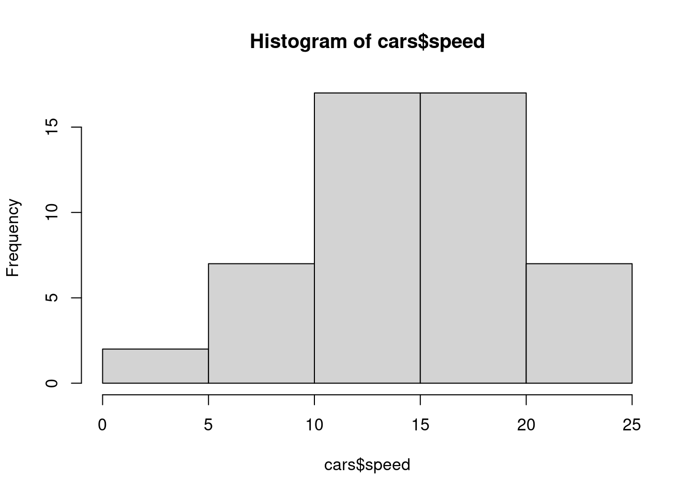
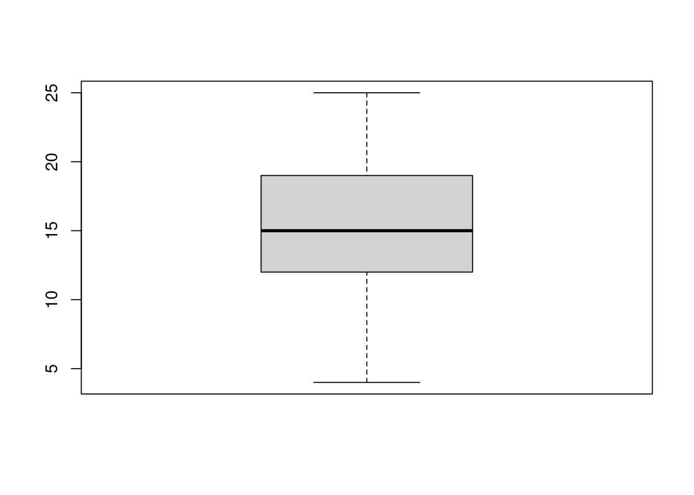
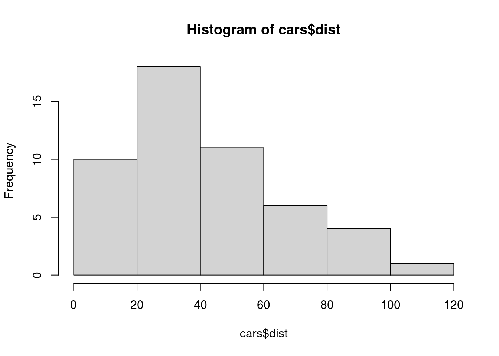
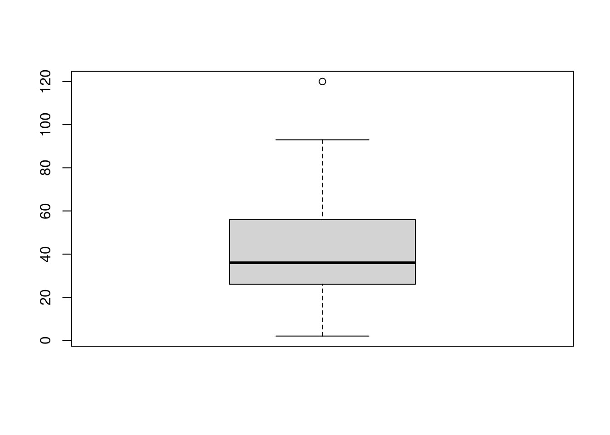
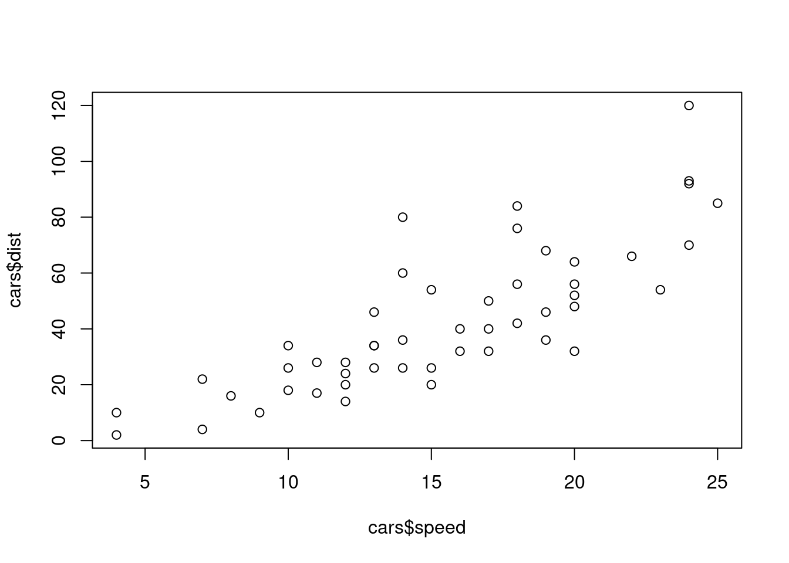

RMarkdown
Learning objectives
- Understand the structure and purpose of R Markdown documents.
- Practice basic Markdown editing for headers, text formatting, lists, and hyperlinks.
- Incorporate and execute R code chunks within an R Markdown document.
- Explore built-in datasets with basic summary statistics and plots.
- Install and load R packages for more functions.
Much of the work in this class will be done via R Markdown documents. R Markdown documents combine text (with some formatting options), R code, and R outputs including figures. They are a great way to produce self-contained, reproducible, well-documented data analyses.
In this first .Rmd worksheet, you will learn how to do some basic markdown editing, continue to explore base R, manipulate datasets, and include some R packages. After you have made changes to the document, press “Knit” on the top of this pane and see what you get: hopefully an html file! It will complain in the console if some part of the code is not working. Remember: troubleshooting is part of programming life!
1. Basic Markdown editing
Let’s try out basic R Markdown features, as described here: try different headers, make a numbered list and a bulleted list, write some text that is bold and some that is in italics, try the block-quote feature.
b. Text formatting
You can use some basic formatting to highlight some part of the text:
bold, italic, or bold and italic
Create a blockquote
To refer to R objects (variables, datasets, functions, …) within the text, we can use the slanted quotes. Remember the mean() function? We will use it again today.
c. Lists and bullet points
Create a list:
- Here
- Are
- Four
- Things
Or some bullet points:
bullet 1
- sub-bullet 1
bullet 2
- sub-bullet 2
bullet 3
- sub-bullet 3
d. HTML hyperlinks, images, tables, etc.
We can include external links and images:
Below is an image from a URL (for local images, just specify the file path in place of the URL):

Note: Modifying text formatting, including links, images, and tables is fairly easy to do with the Visual mode: it works more like a standard text editor.
2. Embedded R code
The advantage of a R Markdown document is that it incorporates R code in chunks within the text.
a. Code chunks
Code chunks will be executed when knitting and, by default, the output will be shown in the knitted file (usually a html output in this course).
# Recall our sweet_apples data frame from last lecture
sweet_apples <- data.frame(
varieties = c('Fuji', 'Gala', 'Golden Delicious', 'Granny Smith'),
sweet_index = c(1, 2, 2, 4),
red = c(TRUE,TRUE,FALSE,FALSE)
)
sweet_applesWe can use the objects created in one chunk in the following chunks:
## [1] 2Note: Make sure to skip at least 1 line before and after the code chunk to avoid any formatting issue.
Try it!
In a group of 4:
Part A: Icebreaker questions
Each group member answers these two questions:
How has your first week of classes been?
What is your spirit animal?
Part B: Collect and analyze data!
- Create a data frame containing the following information: the first names of the group members (including yourself), if they’ve been having a good week (TRUE/FALSE), their spirit animal, their age, their height.
mydataframe <- data.frame(
names = c('Layla', 'Walter', 'Monita', 'Saniya', 'Daniel', 'Divya'),
age = c(35, 99, 99, 99, 99, 99),
height = c(61,99,99,99, 99, 99)
) - Find the mean age and height of students in your group.
## [1] 88.33333## [1] 92.66667The youngest member fills in the following spreadsheet: Link to spreadsheet
Do you think all groups will get the same mean age? mean height? Why/Why not? Get ready to share with the rest of the class.
Not all groups will get the same mean age or mean height because the data vary from group to group. The means for age might be closer together compared to the means for height: there is more variation in height.
Note: we can customize code chunks with a variety of options to control their behavior and appearance in the knitted file. In this worksheet, look for include=FALSE, echo=FALSE, or eval=FALSE in the {r} statement for defining a code chunk.
b. More base R: built-in datasets
R comes with several built-in datasets, which are generally used as demo data for playing with R functions. The dataset used in the following code chunk is cars, which lists speed (mph) and corresponding stopping distance (ft) for some cars from the 1920s. You can run all the code in a chunk at once by using the play button on the top right of the chunk or you can submit code line by line like we did in a regular R script.
## [1] 2 10 4 22 16 10 18 26 34 17 28 14 20 24 28
## [16] 26 34 34 46 26 36 60 80 20 26 54 32 40 32 40
## [31] 50 42 56 76 84 36 46 68 32 48 52 56 64 66 54
## [46] 70 92 93 120 85Try it! Calculate the mean of each variable in the cars dataset. Write a sentence in bold below the code chunk to interpret these values in context (including units).
## [1] 15.4## [1] 42.98The mean speed is 15.4 mph and the mean stopping distance is 42.98 ft for these cars from the 1920s.
You can create some basic table to summarize each of the variables using the means calculated in a previous code chunk:
| speed | distance | |
|---|---|---|
| mean | 15.4 mph | 42.98 ft |
What if we want to include more statistics about our data? A pretty convenient function that can find basic descriptive statistics for all variables in the dataset is summary():
## speed dist
## Min. : 4.0 Min. : 2.00
## 1st Qu.:12.0 1st Qu.: 26.00
## Median :15.0 Median : 36.00
## Mean :15.4 Mean : 42.98
## 3rd Qu.:19.0 3rd Qu.: 56.00
## Max. :25.0 Max. :120.00It can help us find any inconsistencies in the data (e.g., min or max values that are out of range of what we expect).
c. More base R: basic plots
You can easily embed plots in your document:

If you only want to display the plot in the knitted document, and not the code, you can hide the code with the option echo=FALSE in the code chunk settings (see below in {r, }). For example, you will see a boxplot in the html file but you won’t see the code needed to create the plot:

Try it! Use one of the plots above to visualize the distribution of the stopping distance dist. Briefly describe what you see.


In either plot, we can see that most cars had a stopping distance between 20-40 ft and 1 car had a much larger stopping distance.
We could also investigate the relationship between the two numeric variables with a scatterplot:
# Create a basic scatterplot (by default, variable on x-axis first, then variable on y-axis)
plot(cars$speed, cars$dist)
We will learn fancier visualizations (especially with labels and titles!) in the next part of this unit but basic plots are useful for simple and quick visualizations.
3. Packages
Sometimes base R is not enough! R packages are collections of functions and datasets developed by the R community worldwide. You can install a package by typing the function install.packages(“package_name”) in the console panel OR specifying the option eval=FALSE in the code chunk settings (see below in {r, }). This option will not evaluate the code chunk when knitting.
For example, you can install the package tidyverse (it should already be installed on the server):
Note: using install.packages() in your Markdown document will prevent you from knitting so don’t include it in your document since you only need to install a package once! Or use the option eval=FALSE in the code chunk settings.
Once a package is installed, you need to load the package to call specific functions from this package using library(package_name):
We will learn great functions from the tidyverse package throughout the semester.
Note: your R Markdown file is independent, meaning that all packages used in your document must be called within the document. If you are using functions not built in R, you’ll get an error like:
object 'function_name' not found.
Recommended Resources
- Worksheet keys are posted at the end of the week on Canvas under Programming Tools.
- Recommended readings: https://rafalab.dfci.harvard.edu/dsbook/r-basics.html, https://rafalab.dfci.harvard.edu/dsbook/reproducible-projects-with-rstudio-and-r-markdown.html
- R Markdown: The Definitive Guide https://bookdown.org/yihui/rmarkdown/
- R Markdown Cheatsheet https://rstudio.github.io/cheatsheets/rmarkdown.pdf